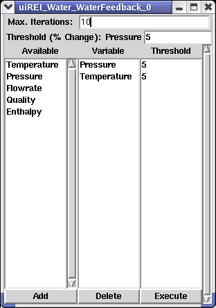

|  | This User Interface allows the user to specify the desired accuracy and computational method of a water feedback loop. The Max. Iterations box gives the total number of iterations allowed in the case that the specifications listed below are not met. The lower list allows the user to define a set of conditions that, if met, end iterations and signify an achieved suitable outcome. Example: The loop defined by the specifications shown at left will cycle until the change in temperature between iterations is less than 5% and the change in pressure is less than 5%, or until the number of iterations reaches 10. Once one of those two condition sets is reached, the module network ends the loop and will continue using the water properties from the most recent iteration. |